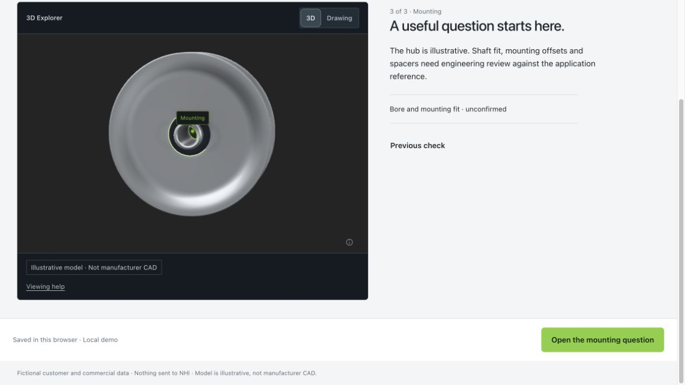
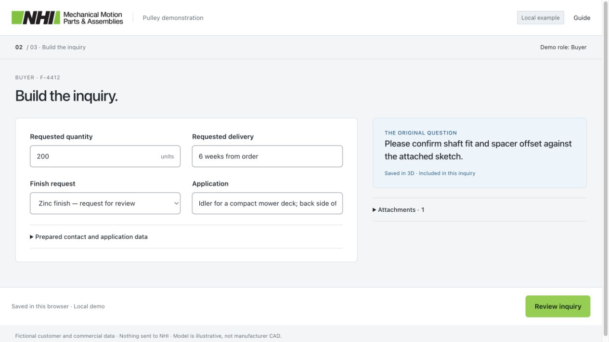
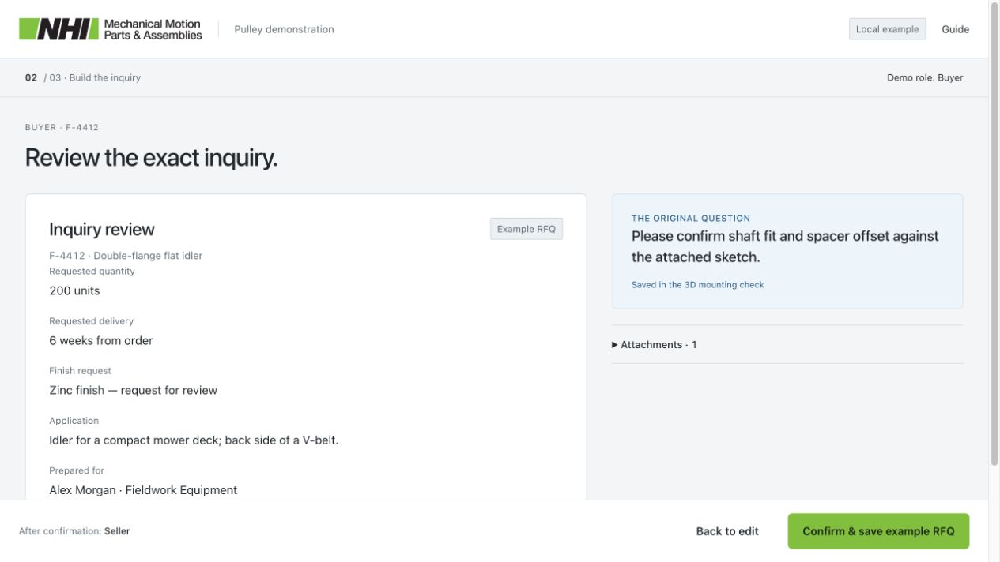
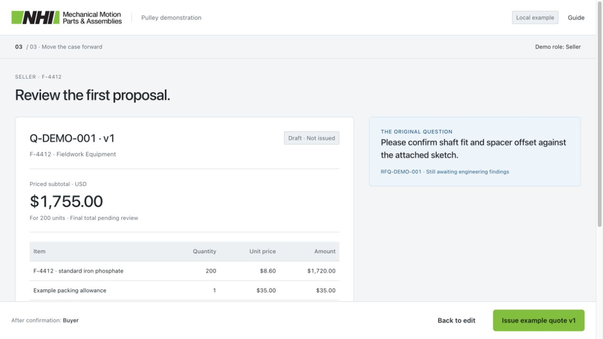
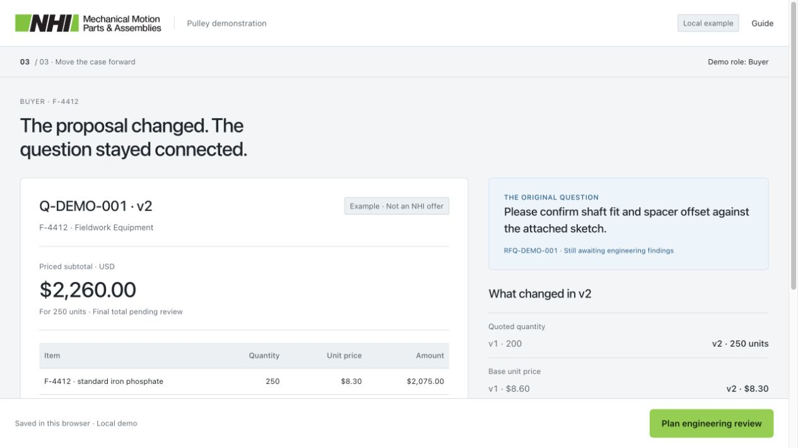
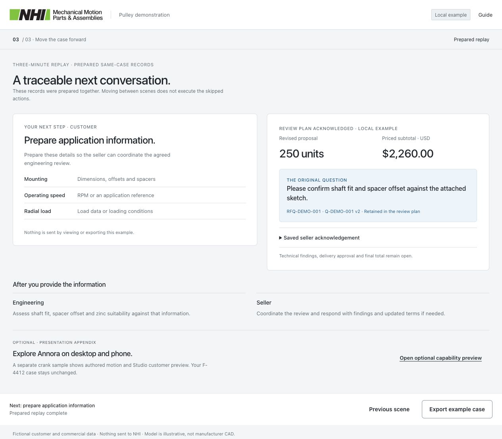
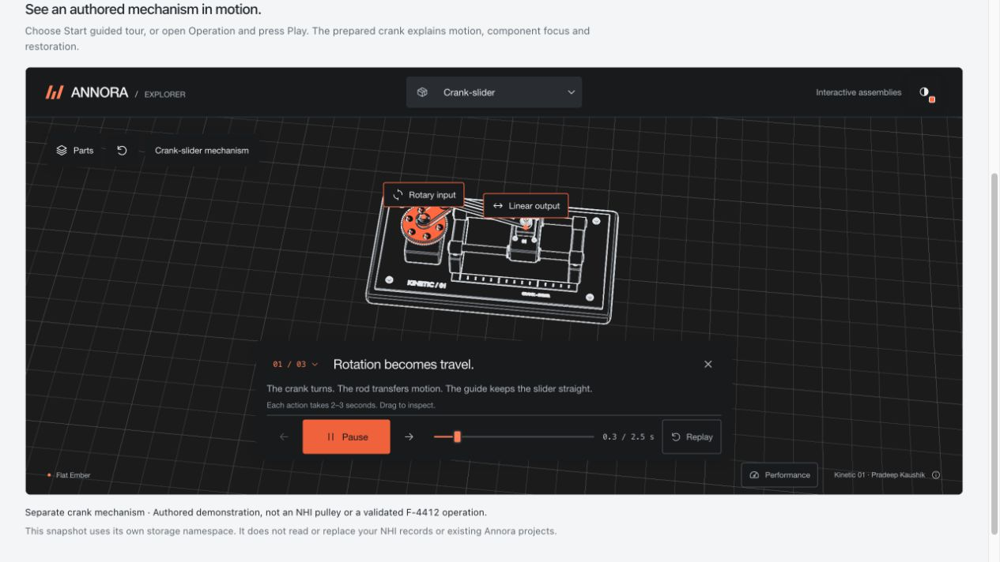
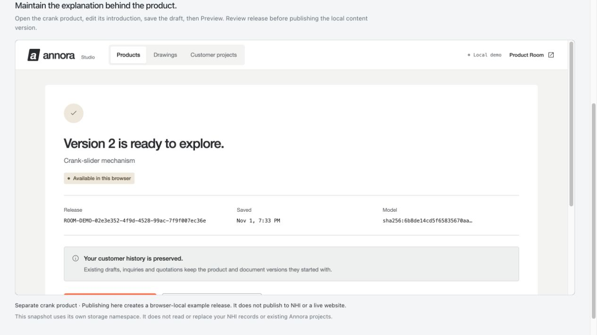

Patrick's presentation backup
From a pulley question to a traceable quotation.
01 / UNDERSTAND · BUYER
See which dimensions matter.
Inspect the running surface, outside flange and mounting point before adding requirements.
The visual explanation helps a buyer identify the uncertainty and ask a useful question.
Static dimension schematic. Catalog A/B/D values are source facts; other geometry is illustrative. The live demo uses the prepared F-4412 model and three authored inspection checks.
A: outside diameter · B: running diameter · D: running width
View captured live demo frame

01 / UNDERSTAND · BUYER
The picture becomes a question.
The buyer saves their original wording against the mounting check.
Reveal 1: uncertainty becomes explicit product context that can travel with the inquiry.
Viewing a region does not save a requirement or establish fit. Saving the question is an explicit live-demo action.
Saved mounting question
F-4412“Please confirm shaft fit and spacer offset against the attached sketch.”
- Source
- F-4412 · Mounting inspection
- Requirement
- Engineering question · Original wording retained
- Reference
- demo-application-sketch.svg
Catalog dimensions do not establish bore, spacer geometry or application fit.
View captured live demo frame

02 / ASK · BUYER
Build a useful inquiry.
The product, original question and attachment stay together with the commercial request.
The buyer starts with what they know. Unknown speed, load and mounting dimensions remain visible for engineering.
This is a prepared offline summary of one fictional RFQ. The live route reviews the exact packet before explicitly saving it.
F-4412 · Prepared RFQ
Fieldwork Equipment · Alex Morgan · Fictional compact mower deck
- Requested quantity
- 200 units
- Requested delivery
- 6 weeks from order · Not confirmed
- Finish request
- Zinc · Feasibility and price require review
- Application
- Compact mower deck; back side of a V-belt
- Carried question
- Please confirm shaft fit and spacer offset against the attached sketch.
Example sketch · Not an engineering drawing. No request is sent to NHI.
View captured live demo frame

03 / PROGRESS · SELLER
The question crosses the handoff.
The seller starts from the same saved inquiry, then reviews a private quotation draft before issuing it.
Reveal 2: the original buyer question remains recognizable to the supplier.
This is a local supplier-role demonstration. It does not show NHI receiving a real inquiry or issuing a real offer.
Example quote v1
- Seller context
- Original RFQ, F-4412 and the mounting question
- Example lead time
- 6–8 weeks after order and technical review
- Still unpriced
- Zinc finish, freight and applicable tax
- Question status
- Engineering review open
View captured live demo frame

03 / PROGRESS · BUYER → SELLER → BUYER
See the response without losing history.
The buyer asks for 250 units and five-week delivery. The seller reviews and issues example v2 against that exact request.
Reveal 3: commercial changes are visible while the original engineering question stays connected.
$2,260 is a priced subtotal, not a final total. Freight and applicable tax remain unpriced. Zinc suitability is still unapproved.
Example v1 / v2 comparison
| Term | v1 | v2 |
|---|---|---|
| Quantity | 200 units | 250 units |
| Base unit price | $8.60 | $8.30 |
| Zinc allowance | Unpriced | $0.60 / unitConditional |
| Packing | $35 | $35 |
| Priced subtotal | $1,755 | $2,260 |
Proposed: six to eight weeks after order and technical review.
Retained question: “Please confirm shaft fit and spacer offset against the attached sketch.”
View captured live demo frame

03 / PROGRESS · BUYER + SELLER
Prepare application information.
The customer supplies mounting details, operating speed and radial load. The seller can then coordinate the acknowledged engineering-review plan.
The customer's next task stays separate from the optional platform demonstration.
Acknowledgement is not an engineering finding, quote acceptance or order. Technical review depends on the missing application information.
Your next step · Customer
- Mounting
- Prepare dimensions, offsets and spacers.
- Operating speed
- Provide RPM or an application reference.
- Radial load
- Provide load data or loading conditions.
- Engineering
- Review shaft fit, spacer offset and zinc suitability once the application data is supplied.
- Sales
- Follow up on conditional timing and unpriced commercial items.
- Retained basis
- F-4412 · Example quote v2 · 250 units · $2,260 priced subtotal
Engineering findings and application fit remain unconfirmed.
View captured live demo frame

Optional Annora capability preview · Separate sample
The live branch uses a separate crank-mechanism sample to show authored motion and richer Explorer controls, plus a Studio workflow for editing, buyer preview and reviewed local publication.
Those capabilities are not all integrated into the F-4412 host. The offline file explains the branch; it does not reproduce its interactive model or editor.
Keep the NHI main story intact, label the sample change, and return explicitly to F-4412. On phone, the live customer preview has its own visible screen with Back to Studio / Return to F-4412; these offline stills do not reproduce that interaction.

